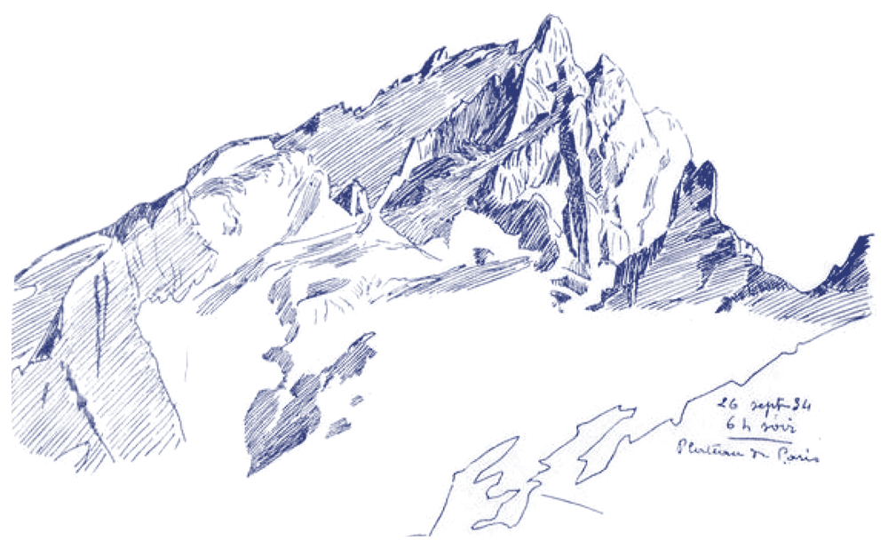
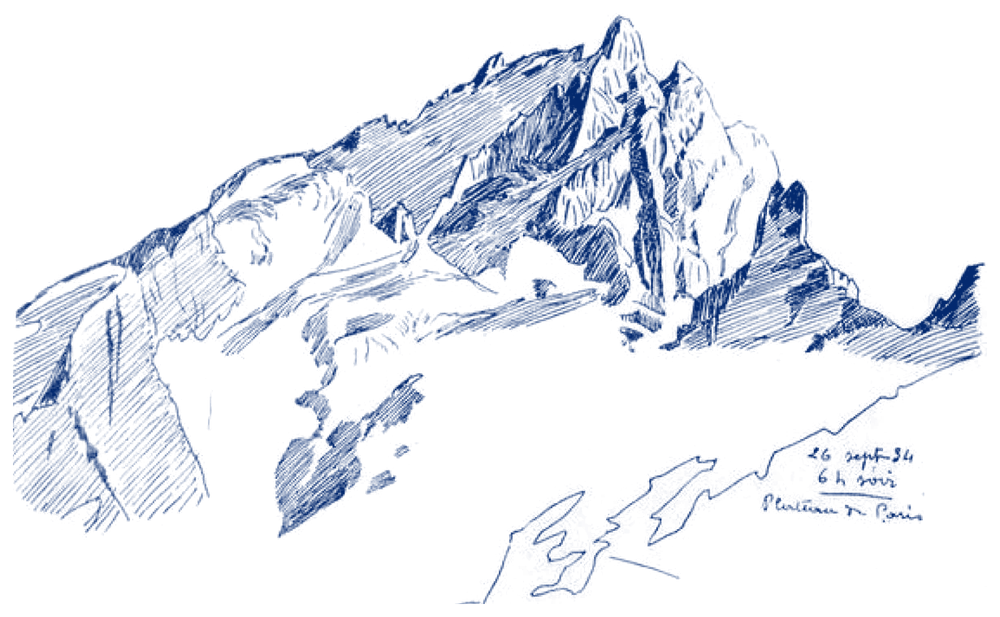

Blue pen-and-ink and linocut mountains for a possible Seeds of Renaissance sub-brand. The paper has been taken out, so each drawing is a transparent PNG that sits on any ground. Switch the ground to check how they print.
Ground
All elements
Every mountain element at once, one row per drawing, one column per ink. Details for each follow below.
Drawing's own blue
Cobalt
Black
High peakpen hatching
Small peakpen hatching
Grid peakfine line
Contour rangepen line
1934 ridgepen hatching
1934 ridge, with notepen hatching


Brush ridgebrush and wash
Peaks and waveslinocut, ink only
Peaks and waveslighter blues
Peaks and waveslinocut on map
High peak
A single steep peak in dense ballpoint hatching, with clouds and a stand of pines.
Pen blue#10248ahigh-peak-pen-blue.png
Cobalt#03296fhigh-peak-pen-cobalt.png
Black#1b1916high-peak-pen-black.png
Small peak
A compact peak in quick violet-blue ballpoint strokes. Sits well at small sizes.
Violet blue#1d14b8small-peak-pen-violet.png
Cobalt#03296fsmall-peak-pen-cobalt.png
Black#1b1916small-peak-pen-black.png
Grid peak
A tall peak above a band of mist, drawn in fine lines. The grid paper behind it has been removed, and the base fades out softly.
Deep blue#0b2c8fpeak-grid-blue.png
Cobalt#03296fpeak-grid-cobalt.png
Black#1b1916peak-grid-black.png
Contour range
A whole range of peaks in pen, with contour lines drifting through the sky. Busy, so best large or as a background.
Navy#14245frange-contours-pen-navy.png
Cobalt#03296frange-contours-pen-cobalt.png
Black#1b1916range-contours-pen-black.png
1934 ridge
A ridge sketched on the spot in parallel hatching. The handwritten note is removed here.
Faded blue#2e3977ridge-1934-pen-blue.png
Cobalt#03296fridge-1934-pen-cobalt.png
Black#1b1916ridge-1934-pen-black.png
1934 ridge, with note
The same sketch keeping the note: “26 sept 34, 6h soir, Plateau de Paris”.
A loose ridge in bold brush strokes and watery wash. The paler wash stays semi-transparent, so the ground shows through it.
Ultramarine#0f22b5ridge-brush-ultramarine.png
Cobalt#03296fridge-brush-cobalt.png
Black#1b1916ridge-brush-black.png
Peaks and waves
A bold linocut of jagged peaks over curling waves, printed on an old map. Ink-only versions drop both the sky and the map paper. The two map versions keep the map inside the mountains and remove only the sky. Lighter blues suit pale grounds and backgrounds.
Blue on mapink #10248a, map keptpeaks-waves-linocut-map-blue.png
Black on maporiginal printpeaks-waves-linocut-map-black.png
Sources
The original images, kept in the mood board.
01 · High peak, blue pen02 · Ridge, ultramarine brush03 · Peak on grid paper04 · Small peak, violet pen05 · Range with contour lines06 · Ridge, 26 Sept 193407 · Peaks and waves, linocut on map